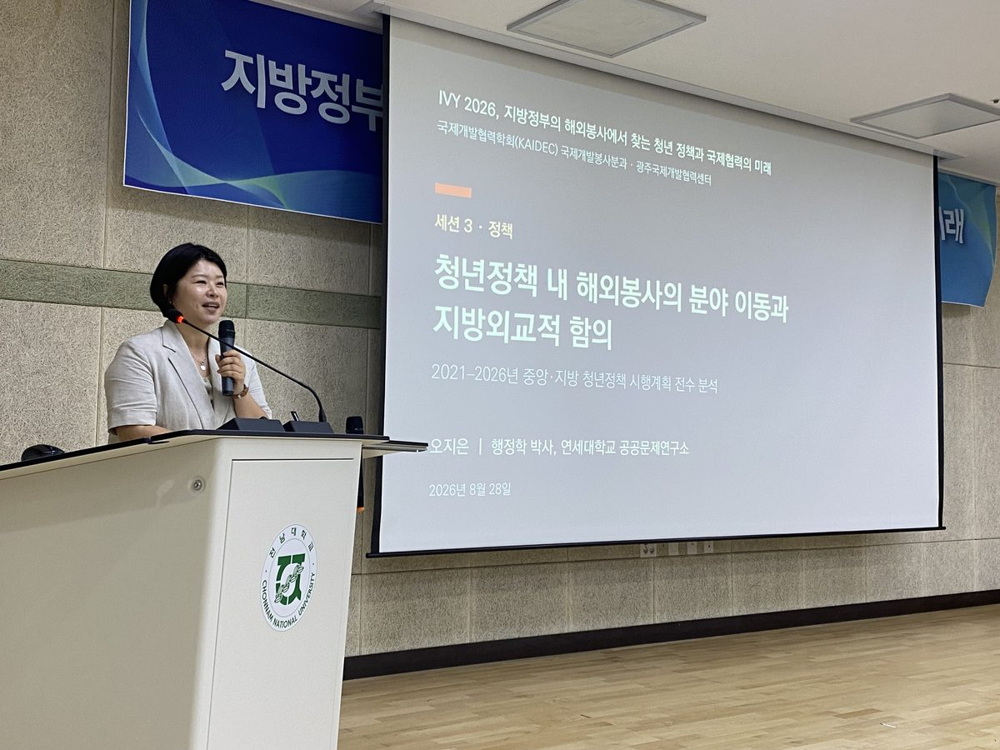
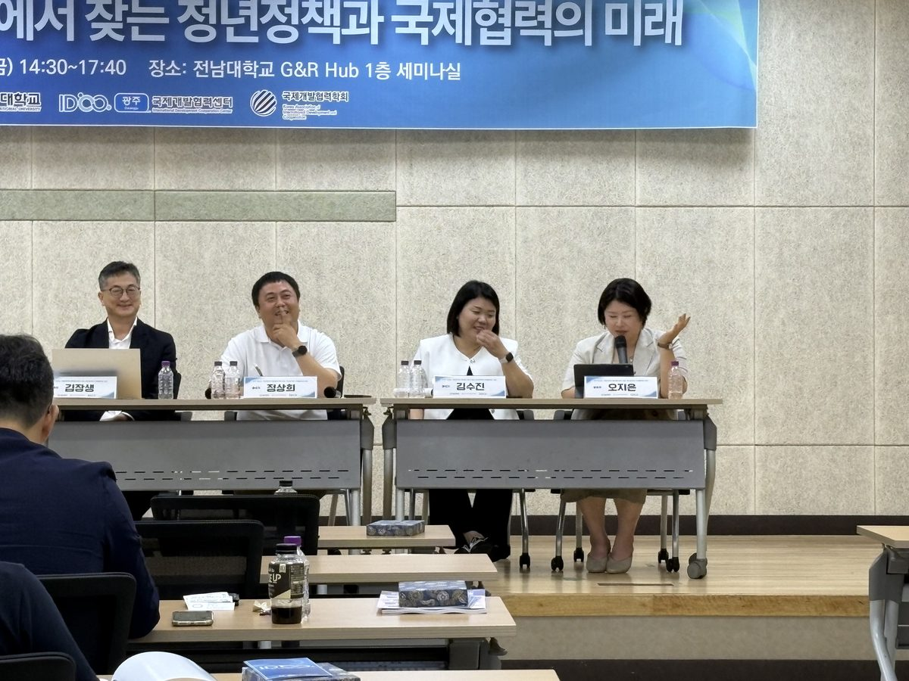
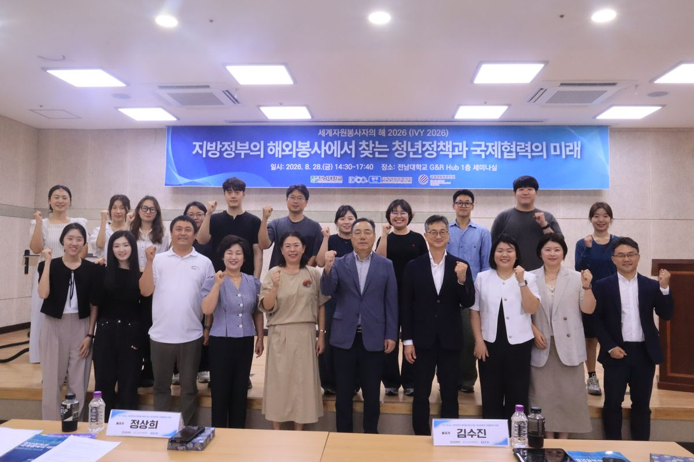

청년정책 안에서 해외봉사는 어디에 놓이는가
IVY 2026 · 지방정부의 해외봉사에서 찾는 청년정책과 국제협력의 미래
- 일시2026년 8월 28일(금) 14:30–17:40, 전남대학교 G&R Hub
- 주최전남대학교 · 광주국제개발협력센터(IDCC) · 국제개발협력학회 국제개발봉사분과 · KOICA
- 발표세션 3(정책) 「청년정책 내 해외봉사의 분야 이동과 지방외교적 함의」
- 자료2021–2026년 중앙·지방 청년정책 시행계획 전수 분석

시행계획을 전수로 읽은 이유
해외봉사가 청년정책 안에서 어떤 대접을 받는지는 담론으로는 잘 잡히지 않습니다. 그래서 2021년부터 2026년까지 중앙과 지방의 청년정책 시행계획을 전수로 놓고, 해외봉사 관련 과제가 어느 분야에 배치되어 있는지 하나씩 확인했습니다.
정리해 놓고 보니 그 결과 자체가 발표의 내용이 되었습니다. 같은 사업이 어느 해에는 일자리 분야에, 다음 해에는 교육·문화 분야에, 또 다른 지자체에서는 참여·권리 분야에 들어가 있습니다. 분야가 옮겨 다닌다는 것은 이 사업을 무엇으로 정당화할지가 아직 정해지지 않았다는 뜻입니다.

지방외교라는 다른 이름
제가 제안한 독법은 이 사업을 청년 개인의 진로 지원으로만 보지 말고, 지방정부가 스스로 수행하는 국제협력의 통로로 보자는 것입니다. 지방정부에는 자체 국제교류 예산이 있고, 자매도시가 있고, 지역 대학과 시민단체가 있습니다. 해외봉사는 그 자원을 실제로 움직이게 하는 몇 안 되는 수단입니다. 그렇게 보면 성과의 단위도 달라집니다. 파견 인원이 아니라 지역이 유지하는 관계의 밀도가 됩니다.
물론 반론이 가능합니다. 지방외교라는 틀은 사업을 키우기 좋은 명분이지만, 지자체 간 경쟁과 홍보성 파견을 정당화하는 데도 똑같이 쓰일 수 있습니다. 이 위험은 토론에서도 지적되었고, 저도 자료로 가려야 할 몫이라고 답했습니다.

남은 물음
이번 발표는 시행계획이라는 문서를 읽은 결과입니다. 문서에 적힌 분류가 현장의 운영과 얼마나 일치하는지는 아직 모릅니다. 다음 단계는 몇 개 지자체를 골라 담당자와 파견 단원을 함께 만나, 문서의 분류와 실제 사업 운영이 어디서 갈라지는지를 보는 일입니다.